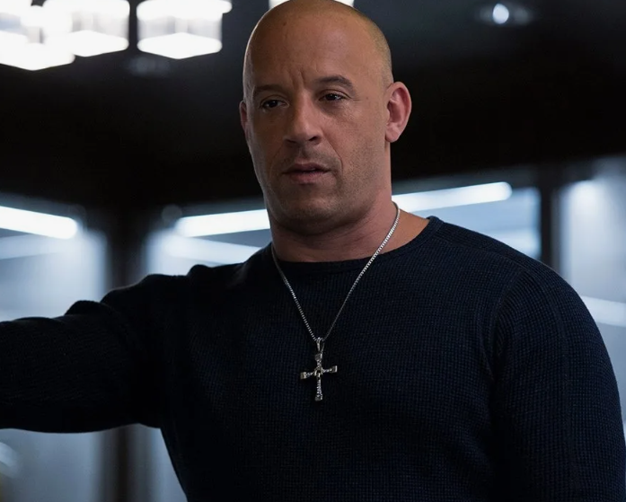

Информация об авторе
Кузькин Тимофей Игоревич
ЭФБО-17-24
Обо мне: Я родился в Москве, но моя душа принадлежит улицам Лос-Анджелеса! С детства мечтал стать частью команды Доминика Торетто. В четыре года уже крутил руль игрушечной машинки, представляя себя за рулем Dodge Charger. Потом школа, где я изучал не только математику, но и искусство дрифта на велосипеде. Каждый день я повторяю мантру: "Семья - это не только кровь, семья - это те, кто готов умереть за тебя". Моя мечта - однажды услышать от Вин Дизеля: "Ты теперь часть семьи, брат!" 🚗💨
Мой опыт работы
Механик в гараже "Семья"
Работал механиком в подпольном гараже, где собирал и тюнинговал машины для уличных гонок. Специализировался на модификации двигателей и установке систем закиси азота. "Семья" - это не только кровь, но и те, кто доверяет тебе свой автомобиль!
Инструктор по дрифту
Обучал новичков искусству контролируемого заноса на закрытых трассах. Преподавал основы дрифта: от простых фигур до сложных комбинаций. Каждый ученик становился частью нашей "семьи" дрифтеров. "Дрифт - это не просто вождение, это философия жизни!"
Организатор уличных гонок
Организовывал подпольные гонки по ночным улицам Москвы. Собирал команды гонщиков, планировал маршруты и обеспечивал безопасность участников. "Семья" гонщиков всегда была готова поддержать друг друга в трудную минуту. "Один за всех, и все за одного!"